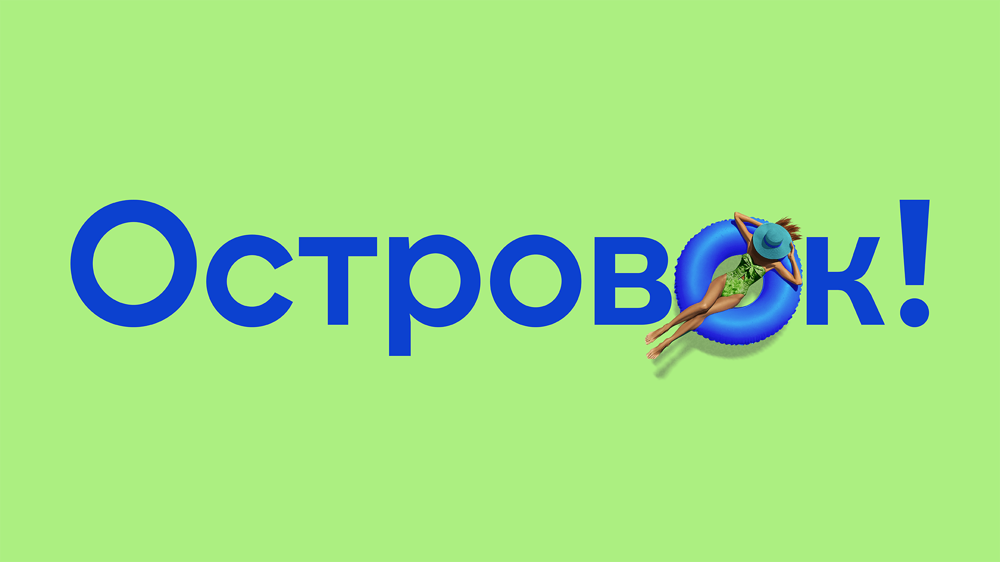
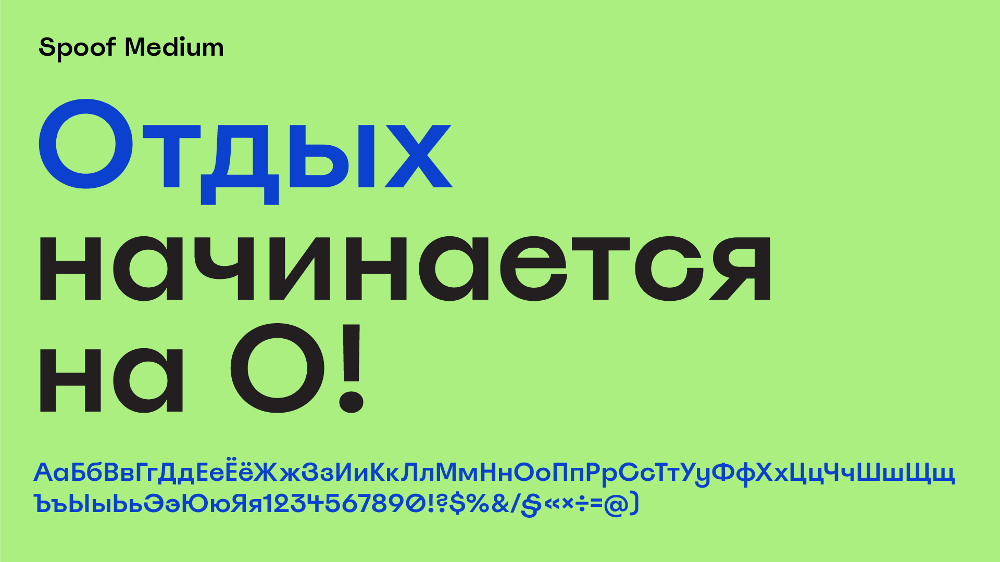
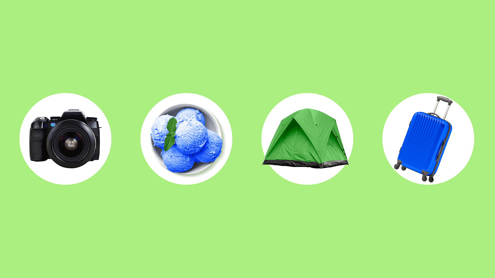
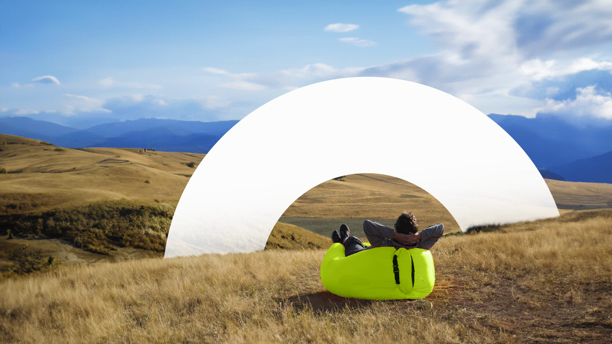
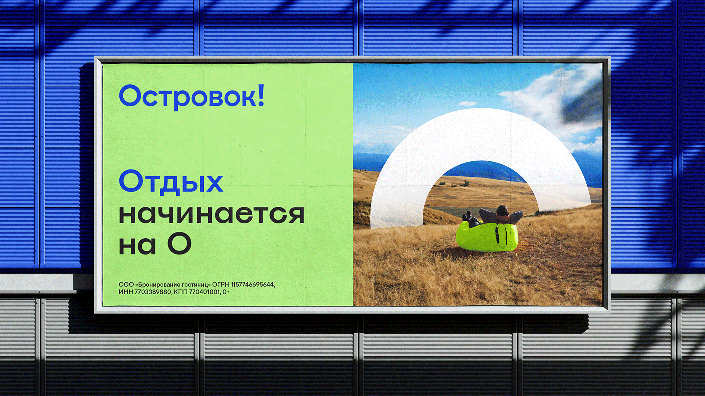
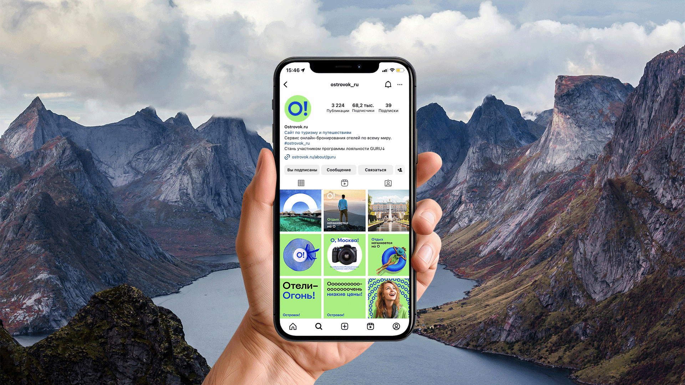

Цвета
Мохито
#ACEF81основной брендовый цвет
Ультрамарин
#0C41CFдополнительный брендовый цвет
Тёмный из референса
#231F20текст в типографическом образце
Белый из референса
#FFFFFFкруглые подложки
HEX сняты с исходных PNG. Это рабочие замеры; на слайде типографики зелёный — #ABEF81. Pantone и CMYK не установлены.
JSON · CSS · SVG-палитра
Шрифты
Spoof Medium указан на слайде типографики. Nagel Medium назван основой доработанного логотипа.
Файлы этих двух шрифтов не приложены. В папке есть ссылки на поставщиков. Golos Text включён с OFL как альтернатива для прототипа; им набран этот обзор.
Сведения и ссылки · JSON · Golos Text TTF
Оригинальные референсы

01-логотип.png · PNG · 1920×1080
03-типографика-spoof.png · PNG · 1920×1080
04-предметы-и-круги.png · PNG · 1920×1080
05-фотостиль-кольцо.gif · GIF · 1920×1080
06-наружная-реклама.gif · GIF · 1920×1080
07-соцсети.gif · GIF · 1920×1080